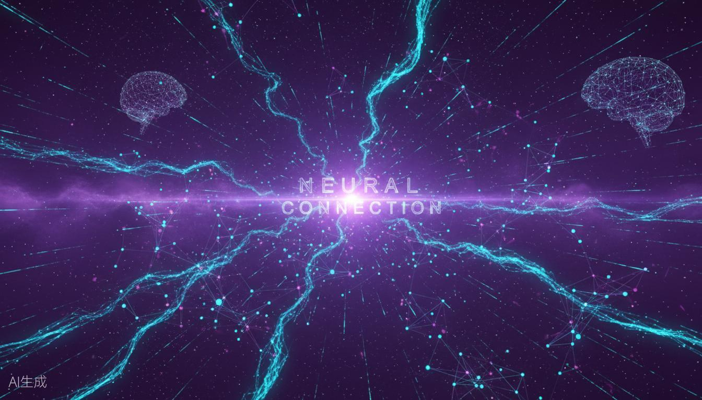

NEURAL CONNECTION / HOMEPAGE STUDY
主页视觉提案
三个彼此独立、内容等量的 UI 方向。选择任一方案进入完整长页面；真实主页、路由与业务组件均未改动。
隔离范围：仅位于 public/examples/home-ui/。原型按钮不会跳转到真实页面，所有 6 张图片与 6 个入口信息完整保留。

NEURALCONNECTION
01 / AURORA ATLAS
沉浸星图
大画幅、玻璃信息层与柔和宇宙光。强调第一印象和世界观的神秘感。
打开完整原型 ↗NEURAL
CONSOLE
CONSOLE
02 / NEURAL CONSOLE
神经仪表盘
高密度网格、模块化数据和清晰状态感。适合强化科幻系统与可探索性。
打开完整原型 ↗DREAM
ARCHIVE
ARCHIVE
03 / DREAM ARCHIVE
叙事档案馆
明亮纸张感、编辑式排版和留白。更亲近人物、文字与柔软的叙事内核。
打开完整原型 ↗✓ 信息无删减英雄区、统计、图集、入口和页脚全部保留。
✓ 完全隔离未注册新路由，未修改 src 下任何真实站点文件。
✓ 响应式桌面、平板、手机三档布局均有独立适配。
✓ 可交互轮播、键盘切换、移动菜单与演示状态提示可用。